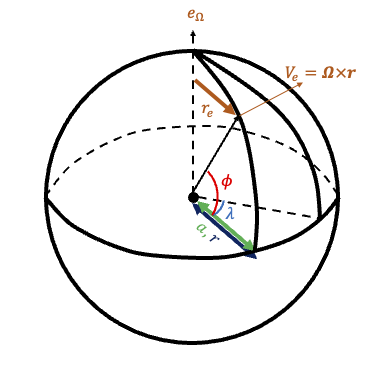
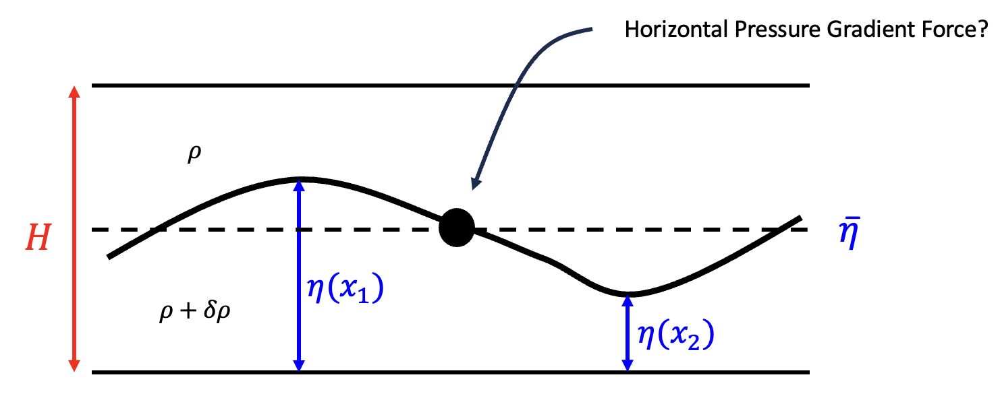
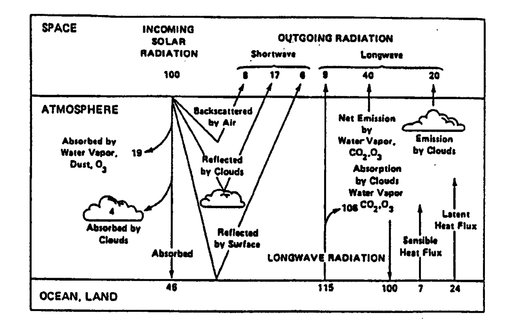

Week 2 and 3: Scale Analysis#
Governing Equation on a Sphere#
Spherical Coordinate#
To deepen our understanding of tropical dynamics, we start by examining the fundamental equations that apply to the tropics. These equations are typically formulated in two ways: (1) primitive equations on a spherical surface and (2) primitive equations on a beta plane. The spherical approach accounts for geometric effects as we move from low to high latitudes, requiring area weighting to maintain conservation laws. Meanwhile, the beta plane approximation simplifies the problem by treating areas across latitudes as uniform.
We’ll begin by considering a simplified form of the primitive equations:
The first equation in (5) is the three-dimensional momentum equation, where \(\mathbf{u}\) is the velocity vector, \(\rho\) is the density, \(\mathbf{\Omega}\) is the Coriolis parameter (with an angular frequency of \(7.292\times 10^{-5}\)), and \(\mathbf{F}\) represents viscous or turbulent forces. The second equation is the continuity equation for mass, indicating that changes in density (in a Lagrangian frame) are driven by the local convergence or divergence of flow. If the flow is incompressible in three dimensions, the right-hand side of this equation becomes zero. The third equation represents the thermodynamic equation, where \(\theta\) is the potential temperature (defined as \(T(\frac{p_0}{p})^{\kappa}\) with \(p_0=1000\) hPa), \(Q\) is the diabatic heating rate, and \(T\) is the temperature. The last equation is the equation of state for an ideal gas, where \(R\) is the gas constant.
At this point, we introduce a key assumption: the Earth’s atmosphere is relatively shallow compared to its radius, and its surface can be approximated as a geopotential surface (i.e., a surface perpendicular to the effective gravity). Taking the Earth’s geometry into account, this reduces the problem to a partial differential equation (PDE) system on a sphere.

Fig. 6 Coordinate variables defined on a sphere.#
where a is the radius of the Earth (6371km) and \(\frac{D}{Dt}=\frac{\partial }{\partial t}+\mathbf{u}\cdot \nabla\).
Hydrostatic Assumption#
The second assumption we introduce is the hydrostatic approximation, which is reliable at scales larger than approximately 20 km. From atmospheric dynamics, we know it holds for the mean state, but here we will demonstrate that it also applies to perturbations. To illustrate this, let’s first rewrite the third equation of (6), where we define the pressure as \(p = p_0(z) + p'(z)\) and the density as \(\rho = \rho_0(z) + \rho'(z)\).
Here, \(\sigma = -g \frac{\rho - \rho_0(z)}{\rho}\) represents the reduced gravity, where \(\rho_0(z)\) corresponds to the portion of the pressure gradient force balanced by gravity. Vertical acceleration occurs when there is a slight imbalance, specifically when \(\rho - \rho_0(z)\) is nonzero. The variables in (7) can be substituted with their characteristic scales (as indicated by the underbraces in (7)).
For a pressure deviation \(\delta p \sim 10^2\) hPa over the depth of the troposphere (20 km), \(\frac{\delta p}{\rho D} \sim \frac{10^2 \text{hPa}}{1 \frac{\text{kg}}{\text{ms}} \cdot 2 \cdot 10^4 \text{m}} \sim 5 \times 10^{-2} \text{m} \cdot \text{s}^{-1}\). Additionally, with \(U \sim 10 \text{m} \cdot \text{s}^{-1}\), \(\Omega \sim 10^{-5} \text{s}^{-1}\), and \(a \sim 10^6 \text{m}\), \(\Sigma\) is of the order of \(10^{-2}\) (with gravity reduced to one-hundredth). The last two terms are relatively small and negligible, leaving us to determine whether \(\frac{Dw}{Dt}\) is small enough to be omitted.
Now, consider:
We can obtain \(\delta p\) from the first equation of (6).
This will yield two different time scales (1) in the case of quasigeostrophic \(\frac{1}{\tau}<< f\) or (2) \(\frac{1}{\tau}>> f\). In the first case (1)
Here, the major pressure perturbation occurs in the horizontal direction.
In the second case, we have
The main pressure perturbation occurs in the vertical direction.
In the low-frequency limit (case 1, where \(1/\tau << f\) or \(1 << f\tau\)), (9) becomes:
In this scenario, even if \(W \sim U\) and \(D \sim L\) (i.e., \(\left|\frac{\frac{W}{\tau}}{\frac{\delta p}{\rho D}}\right| \approx \left|\frac{1}{\tau f}\right|\)), we still find that \(\frac{W}{\tau}\) is much smaller than the pressure gradient force. Therefore, vertical acceleration can be neglected, confirming that the hydrostatic balance is a robust assumption under the quasigeostrophic balance. Note that (6) includes a term \(2\Omega u \omega \mathrm{cos}\phi\), which is maximized at the equator. However, to maintain mathematical consistency in the entire equation, we must drop this term; otherwise, total energy is not conserved under the hydrostatic assumption. This can be shown by calculating the total kinetic energy:
Integrating over the entire domain, we find that the first term on the right-hand side of (13) vanishes, while the second term does not. This necessitates the removal of \(2\Omega u \omega \mathrm{cos}\phi\) and \(\frac{u^2 + v^2}{a}\omega\) to ensure total kinetic energy conservation.
In the high-frequency limit, the hydrostatic assumption only holds when \(W << U\) and \(D/L << 1\). Thus, considering both scenarios, we should impose constraints in high-frequency limits.
Weak temperature gradient#
Now consider a hydrostatic equation at low latitude, we will take a further step and see which term can be neglected.
We recognize that the perturbations in pressure and density are relatively small compared to the basic state. However, a more precise estimate of their order is needed to decide whether these terms can be neglected. We define the pressure height using the log-pressure coordinate, \(\frac{1}{H_p} = -\frac{1}{p_0}\frac{d p_0}{dz}\). Under the quasigeostrophic (QG) assumption, we can refer to (10), and then
where \(F\) is the Froude number and \(R_0\) is the Rossby number. (15) shows that the ratio of the pressure perturbation to the basic state pressure is roughly proportional to the square of the geostrophic flow divided by the squared external gravity wave speed, i.e., approximately \(0.01\) (in the extratropics, with characteristic scales of \(F^2 \sim 10^{-3}\) and \(R_0 \sim 10^{-1}\)).
In the tropics, the pressure perturbation under the hydrostatic assumption can be expressed as:
Here, \(\frac{\delta \rho}{\rho_0}\) represents the reduction factor for gravitational acceleration. This is derived from \(\frac{\partial p'}{\partial z} = -g \rho' \rightarrow \frac{\delta p}{D} \approx g \delta \rho\). One can see that (16) and (15) provide the same scaling. In general, \(F\) does not change significantly between the tropics and extratropics; the primary change in scaling order is due to the Rossby number. Given that in the tropics, \(f \sim 10^{-5}\), \(\frac{F^2}{R_0}\) is approximately \(10^{-3}\).
As for \(\theta'\), a similar analysis can be performed, which is left as an exercise for the reader.
Note
One might wonder why we care about reduced gravity in horizontal direction. This can be found in the following schematic plot.

Fig. 7 How the counteracting pressure gradient force makes gravity reduced.#
Consider an air parcel at the black dot’s location. The horizontal pressure gradient force acting on the air parcel can be expressed as:
where \(a\) is the acceleration of the air parcel due to the pressure gradient force. The pressure gradient force is \(\delta \rho g (\eta(x_1) - \eta(x_2))\) instead of \(\rho g (\eta(x_1)-\eta(x_2))\) because the fluid above creates a counteracting pressure gradient force (from right to left), reducing the overall pressure gradient force. By dividing both sides of the equation by \(\rho\), we obtain:
The first term on the right-hand side is called “reduced gravity.” An alternative representation is the “equivalent depth,” given by \(H' = \frac{\delta \rho}{\rho} (\eta(x_1) - \eta(x_2))\). The “height” causing the pressure gradient is not as large as originally expected but is “equivalent to” a somewhat shallower height. Later sections will discuss the significance of such shallowness.
Tropical Main Energy Balance#
The weak temperature gradient (WTG) assumption discussed in the previous section has several advantages. One key benefit is that it imposes a strong constraint on the structure of vertical motion. Let’s explore this by examining the energy balance in clear-sky conditions.
Under clear skies, if we consider the incoming shortwave (SW) radiation to be 100 units, approximately 30% is reflected back to space due to the average albedo. The remaining 70% passes through the atmosphere, which is nearly transparent to SW radiation, and most of this radiation is absorbed by the surface. Along the way, ozone and some scattered clouds absorb about 23% of the SW radiation, leaving around 46% to be directly absorbed by the surface. On the other hand, the surface emits about 115 units of longwave (LW) radiation, of which about 100 units are reabsorbed by the surface itself. This results in a net radiative cooling of 31 units at the surface in clear-sky regions. This net cooling needs to be balanced by processes other than SW radiation, such as (1) surface sensible heat and (2) latent heat fluxes.

Fig. 8 The global radiative balance maps (From Lidzen 1990)#
One can estimate the net radiative cooling rate of the atmosphere using Fig. 8.
While the average column cooling rate is approximately \(-0.9 \text{K/day}\), this value can vary by location. For example, between latitudes 0-30N, the cooling rate is around \(-1.2 \text{K/day}\), while in higher latitudes, it is approximately \(-0.57 \text{K/day}\).
Given the weak temperature gradient over the tropics, the thermodynamic equation can be approximated as:
This indicates that radiative cooling in clear-sky conditions induces slow downward motion in the atmosphere.
Tropical Momentum Balance#
For the vorticity equation in the tropics, we take the curl (\(\nabla \times\)) of the first equation in (14). This gives us:
By performing a scale analysis, normalizing everything with respect to term \(A\), we get the following scalings: \(A\sim 1\), \(B\sim \frac{U}{L}\frac{W}{D}=\frac{1}{R_i R_0}\), \(C\sim \frac{2\Omega \mathrm{cos}\phi a}{L^2}\) \(D\sim \frac{U}{L}\frac{W}{D}\frac{1}{R_0}=\frac{1}{R_i R_0^2}\), \(E\sim\frac{F^2}{R_0^2}\)
From these scalings, we see that the primary balance of angular momentum (vorticity) is:
This scaling is significant because it shows that in regions with minimal vertical motion (where \(Ri\) is small), the flow is nearly barotropic, meaning vorticity (or angular momentum) is conserved. As a result, the flow remains largely independent across different vertical levels.
Based on the above scaling, we can conclude:
The hydrostatic assumption is valid only when the aspect ratio is small.
The weak temperature gradient assumption is reliable in the tropics due to a large Rossby number (implying a small Coriolis force).
In regions without convection, the flow is barotropic.
In regions with convection, the main balance is given by: \(w\frac{N^2}{g}=\frac{Q}{c_p T}\)
The last point is so-called quasi-equilibrium. The change in diabatic forcing is always balanced by the vertical motion. Through mass continuity, we also know the connection between vertical motion and horizontal wind and to solve the entire circulation pattern with given forcing. We will cover more about this topic in the week of tropical wave.
Cumulus Ensemble#
A natural question arises: if the tropical atmosphere is nearly barotropic, where does the kinetic energy originate? To understand how energy is converted, we start with the relationship:
Unlike in the extratropics, where the mean energy extraction occurs via \(<v'T'>\sim-\frac{\partial T}{\partial y}\), in the tropics it occurs through \(<w'T'>\). From the equation above, it is clear that this energy conversion is driven by convection, which “heats where it is hot and cools where it is cold.” This process occurs on convective scales rather than on large scales:
where Fraction represents the fraction of cloud cover, and \(T_{c}-T_{env}\) is the temperature difference between cloud and its surrounding environment.
However, the above equation is a simplification, as different cloud types contribute differently to heat transport. A more accurate representation of cloud effects is:
where more details can be found in the works of Yanai et al. (1973) and Arakawa and Schubert (1974).
Clausius–Clapeyron equation#
One last useful scaling is Clausius–Clapeyron equation or so-called C-C equation. C-C equation describes the relation between temperature, and saturation water vapor, which can be written as:
where \(e_0\approx6.1\)hPa is the saturation vapor pressure at 0 Celcius. The reason why it is important is that the tropical heat source is dominated by the convective latent heat release i.e., \(Q\sim Lw\frac{\partial q}{\partial z}\) (this assumption can lead to a few problem which will be discussed more in the section of MJO). If we implement the second assumption, “fixed relative humidity” then the aformentioned relationship can be translated into \(Q\sim Lw\frac{\partial q_s}{\partial z}\times \text{RH}\). This provides us some strong constraint on the projected change of tropical hydrological cycle.
More details will be provided in the last chapter of this class.